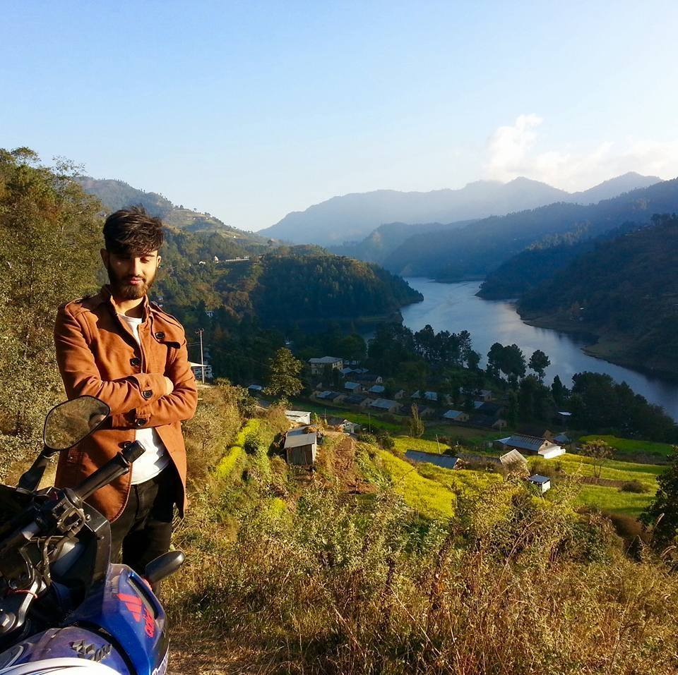

Well talking about me, I was born in 1998 april 26 at a hospital. There are four members in my family. well i passed my SLC from Nobel academy and my +2 from Global College of Management. I was not a bright kid at my school and nor in my college. But I like computers and used to score preety good marks in it. In computer, talking about a specific topic I like programing. I learnt Qbasic inmy school days and C programming in my +2. Currently I am studying computing in my bachelor's.
